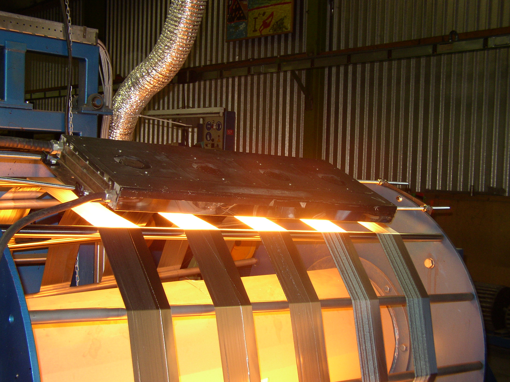

Warm Lijmen
Wat is Warm Lijmen?
Definitie
Warm lijmen is een techniek waarbij smeltlijm wordt gebruikt om verschillende materialen aan elkaar te bevestigen. De lijm wordt verwarmd tot het smeltpunt en vervolgens op het oppervlak aangebracht. Zodra de lijm afkoelt, hardt deze uit en vormt een sterke binding tussen de materialen.
Voordelen van Warm Lijmen
- Snelle hechting: De lijm hardt snel uit, waardoor het proces efficiënt verloopt.
- Sterke binding: Biedt een duurzame hechting die bestand is tegen veel fysieke belastingen.
- Veelzijdigheid: Kan worden toegepast op verschillende materialen, zoals papier, karton, en sommige kunststoffen.
Toepassingen van Warm Lijmen
Warm lijmen wordt vaak gebruikt in de volgende situaties:
- Boekbinding: Voor het lijmen van boekruggen bij zachte kaften.
- Verpakkingen: Voor het sluiten van dozen en andere verpakkingen.
- Marketingmateriaal: Voor het bevestigen van componenten zoals kaarten of monsters in folders.
Hoe Werkt Warm Lijmen?
Warm lijmen begint met het verwarmen van de lijm tot een vloeibare toestand. De vloeibare lijm wordt vervolgens aangebracht op het oppervlak dat moet worden bevestigd. Na het aanbrengen koelt de lijm af en hardt deze uit, waardoor de materialen stevig aan elkaar hechten.
Belangrijke Overwegingen bij Warm Lijmen
- Temperatuurcontrole: Het is belangrijk om de temperatuur van de lijm nauwkeurig te regelen om te voorkomen dat de lijm te dun of te dik wordt.
- Hechttijd: De tijd die de lijm nodig heeft om af te koelen en volledig uit te harden, kan variëren afhankelijk van de omgevingsomstandigheden.
- Compatibiliteit: Niet alle materialen zijn geschikt voor warm lijmen; zorg ervoor dat de materialen bestand zijn tegen de hitte van de lijm.